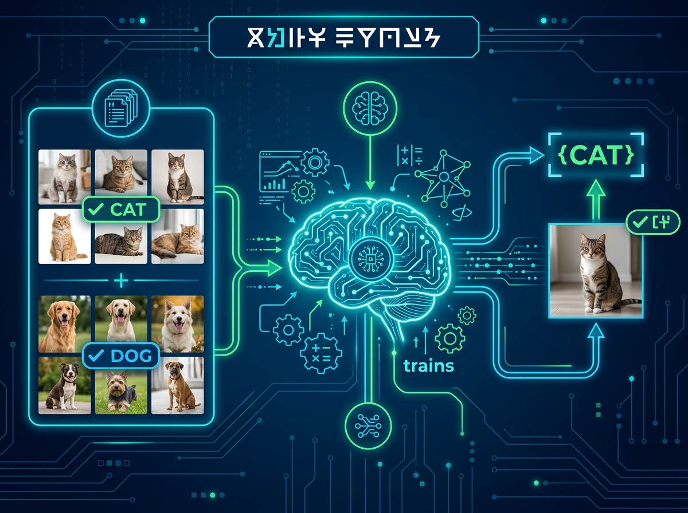
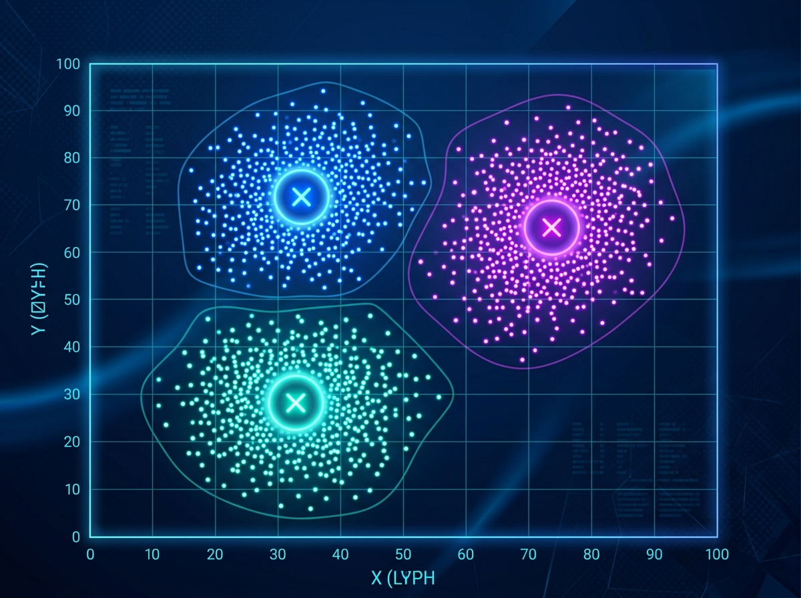

2.1 Supervised learning (Học có giám sát)
Supervised learning (Học có giám sát) là phương pháp học máy trong đó mô hình được huấn luyện trên tập dữ liệu đã được gán nhãn sẵn. Mỗi mẫu dữ liệu bao gồm các thuộc tính đầu vào và đầu ra mong muốn tương ứng. Mục tiêu của mô hình là học được mối quan hệ ánh xạ từ đầu vào sang đầu ra để có thể dự đoán chính xác nhãn của các dữ liệu mới chưa từng quan sát trong thực tế.
Ví dụ dễ hiểu:
Trong bài toán phân loại các bức ảnh chó mèo, dữ liệu huấn luyện gồm hàng nghìn bức ảnh đã được gán nhãn sẵn là "cat" hoặc "dog". Chúng ta đưa các bức ảnh này vào thuật toán và chỉ rõ nhãn của từng bức ảnh. Sau khi thuật toán huấn luyện tạo ra một mô hình (một hàm số ánh xạ bức ảnh đầu vào tới nhãn đầu ra), khi nhận được một bức ảnh mới, mô hình sẽ phân tích các đặc trưng học được để tự động dự đoán xem đó là chó hay mèo.

Hình 2.1: Quy trình Supervised Learning cơ bản (nguồn ảnh được sinh bởi Gemini Pro)
Ứng dụng:
Supervised learning được sử dụng rộng rãi trong các hệ thống dự đoán và ra quyết định thực tế như phát hiện giao dịch gian lận tài chính, chẩn đoán bệnh lý y tế, nhận dạng vật thể trong ảnh và các bài toán dịch máy tự động.
Thuật toán học có giám sát được chia làm hai lớp bài toán chính:
2.1.1 Classification (Phân loại)
Đầu ra dự đoán là các nhãn rời rạc (lớp/nhóm riêng biệt). Mục tiêu là gán mẫu dữ liệu vào một trong các lớp đã định sẵn.
Ví dụ: Phân biệt email Spam / Ham; Phân loại hồ sơ nợ xấu.
Thuật toán tiêu biểu: Logistic Regression, k-NN, SVM, Decision Tree.
2.1.2 Regression (Hồi quy)
Đầu ra dự đoán là một giá trị liên tục (đại lượng số thực). Mục tiêu là tìm hàm xu hướng để khớp với phân bố điểm dữ liệu.
Ví dụ: Dự đoán giá nhà dựa trên diện tích và vị trí; Dự toán thời tiết.
Thuật toán tiêu biểu: Linear Regression, Ridge, Lasso, Decision Tree Regression.
2.2 Unsupervised learning (Học không giám sát)
Unsupervised learning (Học không giám sát) là phương pháp học máy trong đó dữ liệu huấn luyện hoàn toàn không được gán nhãn trước. Thuật toán sẽ phân tích cấu trúc của các đặc trưng đầu vào để tự động tìm ra các quy luật, phân cụm (Clustering) hoặc giảm chiều dữ liệu (Dimension Reduction) phục vụ cho việc lưu trữ và tính toán.
Ứng dụng:
Unsupervised learning thường được dùng trong phân tích thăm dò dữ liệu (EDA), phân khúc hành vi khách hàng, phát hiện các điểm bất thường hệ thống (anomaly detection) và làm tiền xử lý dữ liệu trước khi huấn luyện các mô hình có giám sát.
Các bài toán học không giám sát được chia làm hai dạng chính:
2.2.1 Clustering (Phân cụm)
Là bài toán gom nhóm dữ liệu đặc trưng $\mathbf{X}$ thành các cụm nhỏ dựa trên khoảng cách hoặc sự tương đồng về thuộc tính giữa các điểm dữ liệu.
Ví dụ (Phân cụm khách hàng):
Giả sử ta có dữ liệu của hàng nghìn khách hàng bao gồm độ tuổi, thu nhập, tần suất mua sắm và giá trị hóa đơn. Dữ liệu này không có sẵn nhãn phân loại nhóm. Thuật toán học không giám sát (như K-means) sẽ tự động tính toán khoảng cách đặc trưng để gom nhóm họ thành các cụm khách hàng có hành vi tương tự nhau, giúp doanh nghiệp thiết lập chiến dịch tiếp thị tối ưu.

Hình 2.2: Minh họa kết quả phân cụm khách hàng (nguồn ảnh được sinh bởi Gemini Pro)
Thuật toán phân cụm tiêu biểu: K-means, Hierarchical Clustering, DBSCAN.
2.2.2 Association rule (Luật kết hợp)
Là bài toán khai phá các mối quan hệ, sự tương quan hoặc quy luật đồng thời xuất hiện giữa các thực thể khác nhau trong một tập dữ liệu giao dịch lớn.
Ví dụ: Phát hiện quy luật giỏ hàng siêu thị (khách hàng nam mua tã giấy có xu hướng mua thêm bia); Khán giả xem phim Spider Man thường có xu hướng xem tiếp Batman. Đây là cơ sở cốt lõi để xây dựng các Hệ thống gợi ý (Recommendation System) cho thương mại điện tử và dịch vụ truyền thông.
Thuật toán luật kết hợp tiêu biểu: Apriori, FP-Growth, Eclat.
2.3 Semi-supervised learning (Học bán giám sát)
Semi-supervised learning (Học bán giám sát) là phương pháp học máy trung gian kết hợp giữa học có giám sát và học không giám sát. Tập dữ liệu huấn luyện bao gồm một lượng nhỏ dữ liệu đã được gán nhãn và một lượng lớn dữ liệu chưa gán nhãn. Mục tiêu là tận dụng cấu trúc phân bố của dữ liệu không nhãn để cải thiện độ chính xác phân loại của mô hình, giúp tiết kiệm chi phí dán nhãn dữ liệu.
Ví dụ: Trong bài toán nhận dạng chữ viết tay, việc gán nhãn thủ công hàng triệu ảnh rất tốn thời gian. Học bán giám sát sẽ dùng một lượng nhỏ ảnh chữ viết tay đã gán nhãn để làm mẫu định hướng, sau đó quét qua cấu trúc hình học của tập hợp ảnh không nhãn để tự động lan truyền nhãn (label propagation) sang các ảnh tương đồng, từ đó xây dựng mô hình dự đoán chính xác trên dữ liệu mới.
Thuật toán tiêu biểu: Self-training (Pseudo-labeling), Label Propagation.
2.4 Reinforcement learning (Học tăng cường)
Reinforcement learning (Học tăng cường) là phương pháp học máy dựa trên cơ chế thử và sai (trial-and-error). Một tác nhân (Agent) sẽ tự học cách đưa ra chuỗi hành động tối ưu thông qua việc tương tác trực tiếp với Môi trường (Environment). Sau mỗi hành động thực thi, tác nhân sẽ nhận được phản hồi là Điểm thưởng (Reward) hoặc Hình phạt (Penalty) từ môi trường để từ đó tự điều chỉnh chiến lược nhằm tối đa hóa tổng điểm thưởng trong dài hạn.
Ví dụ (Robot di chuyển): Robot được đặt trong mê cung chứa chướng ngại vật. Nó không được lập trình sẵn đường đi đúng. Mỗi khi đi đúng hướng tới đích, nó nhận được điểm thưởng (+1). Mỗi khi đâm vào tường, nó bị phạt (-1). Thông qua hàng triệu lượt thử-sai, Robot sẽ tự tìm ra chiến lược di chuyển thông minh nhất để về đích mà không va chạm.
Thuật toán tiêu biểu: Q-learning, SARSA, Deep Q-Network (DQN).
Tra cứu thuật ngữ Chương 2
| Thuật ngữ | Ý nghĩa |
|---|---|
| Agent (Tác nhân) | Đối tượng thực hiện hành động và học cách đưa ra các quyết định tối ưu trong học tăng cường. |
| Pseudo-labeling | Gán nhãn giả - Phương pháp học bán giám sát tự động gán nhãn dự đoán cho dữ liệu không nhãn để huấn luyện tiếp. |
| Clustering Centroid | Tâm phân cụm - Điểm trung tâm đại diện cho một nhóm dữ liệu tương đồng trong các thuật toán phân cụm. |